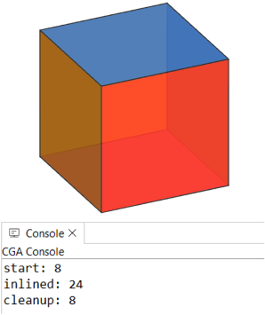

Rule inlining
Syntax
inline(geometryMergeStrategy) Rule
inline(geometryMergeStrategy) subdivision
inline(geometryMergeStrategy) { operations }
Parameters
- geometryMergeStrategy (selector)
Defines how the geometry of the resulting shapes are combined:
| append | Appends the geometry as is. |
| unify | Uses the Boolean 3D union operation. |
- Syntax options:
| Rule | Name of a rule. |
| subdivision | A subdivison operation (see Geometry Subdivision). |
| { operations } | A sequence of shape operations in curly brackets. |
Description
The
inline keyword triggers the immediate derivation of the specified rule, subdivision operation, or shape operation sequence. The resulting shapes are then automatically merged into a single shape that replaces the current shape.
In case it results in a single shape, it is taken as is. If it results in multiple shapes, their geometries are combined according to the
geometryMergeStrategy.
If the inlined shapes have conflicting material attributes, each shape's material is written to the geometry, meaning that all materials are preserved. For other attributes, the value of the current shape is kept if the inlined shapes have conflicting values or if more than one
set operation has occurred.
Concept
 |
Init -->
MyRule
color(1,0,0)
Result.
MyRule -->
t('1.5, 0, 0)
extrude(1)
Extruded.
When invoking a rule (i.e. MyRule), a copy of the current shape is created and added as a successor. This shape is then separately derived using the specified rule and has no effect on the current shape. Thus, the color(1,0,0) operation has no effect on Extruded, and the resulting shape tree has two separate leaf shapes: Extruded and Result.
|
 |
Init -->
inline(append) MyRule
color(1,0,0)
Result.
Inlining MyRule allows to continue to work on its result. This means that a rule can be used like a shape operation that affects the current shape. Thus, the color(1,0,0) operation continues on Extruded and the resulting shape tree has only a single leaf shape: Result.
|
Geometry merge strategy
The correct
geometryMergeStrategy depends on the modeling objective. Currently, two strategies are offered:
| append | Used to simply collect the geometries of multple shapes and put them into a single mesh. No geometry cleanup is performed and all components are kept as is. |
| unify | Used to combine the geometries of intersecting shapes with Boolean 3D operations. Intersecting faces get topologically connected and inner faces are removed. |
Related
Examples
Mesh Topology
|  |
Init -->
primitiveCube
print("start: " + geometry.nVertices)
inline(append) comp(f) { all: SetColor }
print("inlined: " + geometry.nVertices)
cleanupGeometry(vertices, 0)
print("cleanup: " + geometry.nVertices)
rampValue = comp.index/comp.total
SetColor -->
set(material.opacity, 0.9)
color(colorRamp("spectrum", rampValue))
Inlining is used to combine the colored faces of a cube back into a single shape. The faces are simply appended and thus do not share vertices. This can be fixed using cleanupGeometry.
|
F-Shaped Building
 |
Init -->
split(z, noAdjust)
{ 7: split(x) { ~7: House | 7: House }*
| ~1: split(x) { ~7: NIL | 7: House }* }
House -->
extrude(5)
comp(f) { side: Fac. | top: roofGable(40) Roof. }
Without inlining: The initial shape is split into an F-shape. Each piece is separately extruded and a separate detached roof is built on top.
|
 |
Init -->
inline(append) FShapePieces
cleanupGeometry(all, 0)
House
FShapePieces -->
split(z, noAdjust)
{ 7: split(x) { ~7: Done. | 7: Done. }*
| ~1: split(x) { ~7: NIL | 7: Done. }* }
With inlining: The FShapePieces rule is inlined, which combines all pieces into a single shape. With append the geometry is kept as is, which means the pieces are not connected via shared edges. To connect them and merge them into a single footprint polygon, the cleanupGeometry operation is used. This results in a single extruded mass and a single joint roof.
|
Best of Two Alternatives
|
Init -->
inline(append) {
[ tag("LayoutA") LayoutA ]
[ tag("LayoutB") LayoutB ]
}
ChooseLayout
LayoutA --> offset(-15, border)
LayoutB --> split(x) { 15: Lot. | ~10: NIL }*
taggedArea(name) =
sum(comp(f) { isTagged(name): geometry.area })
ChooseLayout -->
case taggedArea("LayoutA") > taggedArea("LayoutB"):
comp(f) { isTagged("LayoutA")= Mass }
else: comp(f) { isTagged("LayoutB")= Mass }
Mass --> extrude(30)
Two different and tagged layouts are generated. Using inline(append) they are combined into a single shape.
The comp function and tags are then used to compare the area of both layouts and continue only with the larger one.
|
Unify Spiral Steps
 |
Init -->
inline(unify) StepsRec(18)
color(0, 1, 0, 0.8)
StepsRec(nSteps) -->
case nSteps > 0:
Step
r(0, 20, 0)
t(0, 0.18, 0)
StepsRec(nSteps-1)
else:
NIL
Step --> s(0.4, 0.3, 1) primitiveCube
The StepsRec(ind) rule recursively generates the steps of the spiral stairs.
When the rule is inlined using unify, the steps are combined into a single shape and their geometries merged into a single watertight mesh using Boolean 3D union operations.
|
Inline and Tags
|
Init -->
inline(unify) split(x) { 3: A | 4: B | 3: C }
comp(f) { isTagged("A"): Blue
| isTagged("B"): Yellow
| isTagged("C"): Red }
A --> primitiveCylinder tag("A")
B --> t(-1, 0.5, 0.75)
s(6, 2, 1.5)
primitiveCube
tag("B")
C --> primitiveSphere tag("C")
The initial shape is split into three parts, with a different primitive geometry asset inserted into each part and then tagged. Inlining the split using unify merges them into a single watertight mesh while preserving the tags on the individual face components.
|
 |
Init -->
inline(unify) split(x) { 3: A | 4: B | 3: C }
comp(f) { isTagged("A") && isTagged("B"): Green
| isTagged("B") && isTagged("C"): Orange
| isTagged("A") : Blue
| isTagged("B") : Yellow
| isTagged("C") : Red }
A --> primitiveDisk tag("A")
B --> t(-1, 0, 0.75)
s(6, 0, 1.5)
tag("B")
C --> tag("C")
Blue --> color("#0399F5")
Green --> color("#09DE1F")
Yellow --> color("#FADB19")
Red --> color("#FF360A")
Orange --> color("#FA9100")
The same example in 2D. All original edges and tags are preserved, allowing to identify the intersecting parts using tags.
|